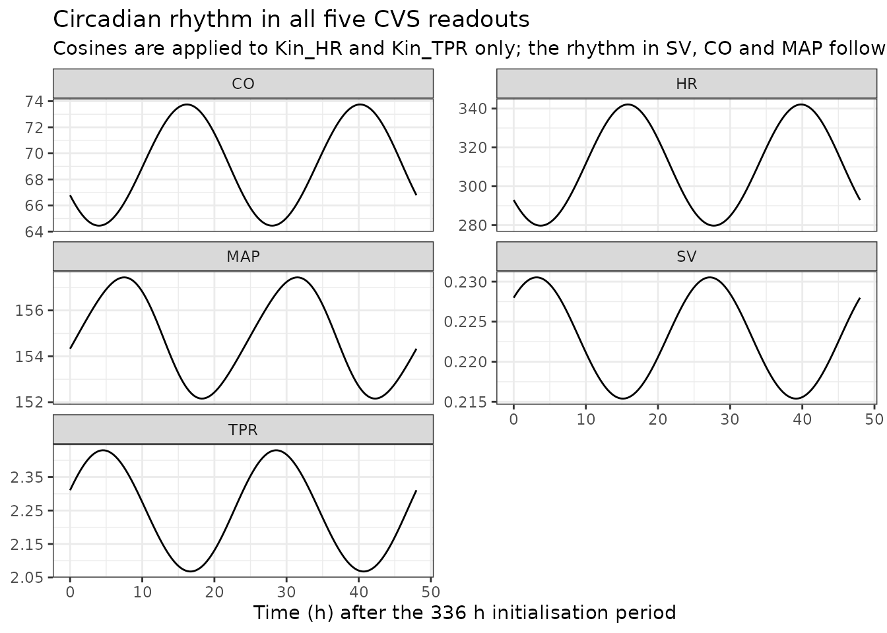
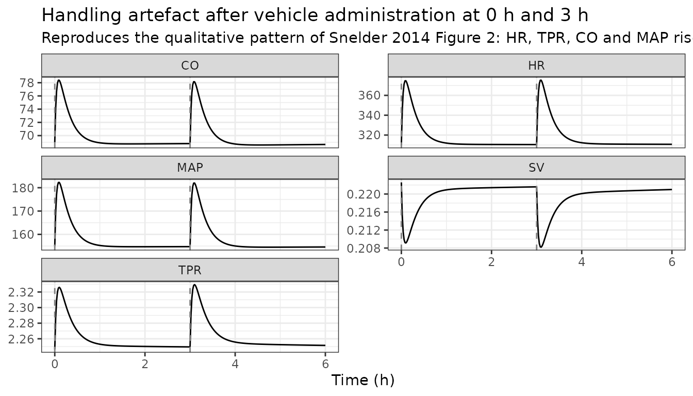
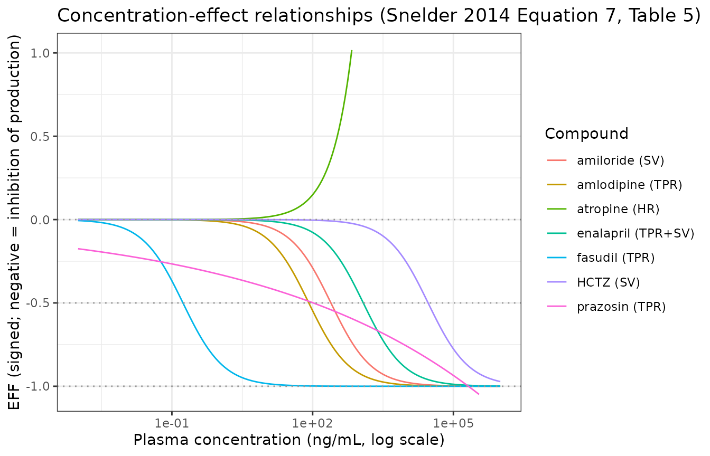
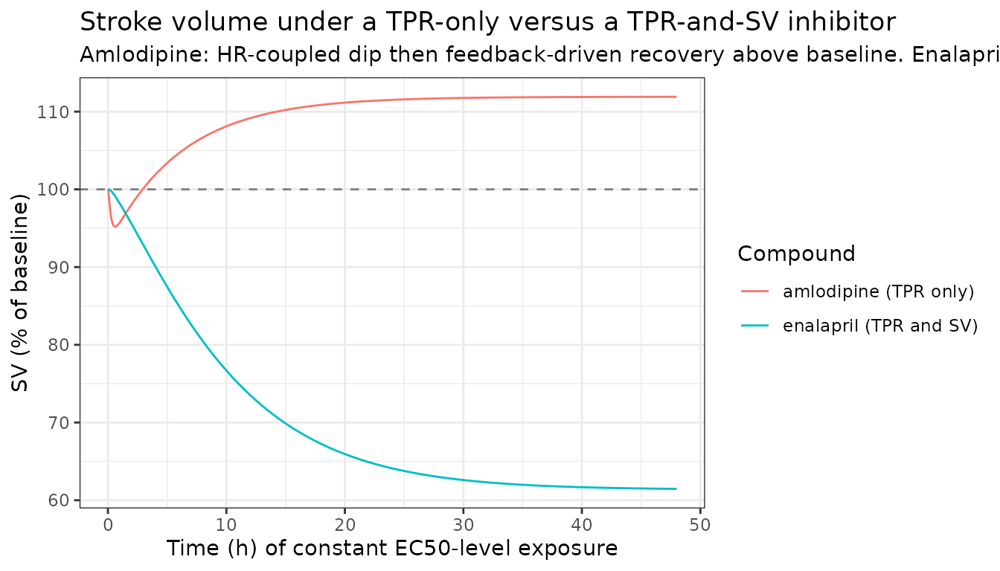
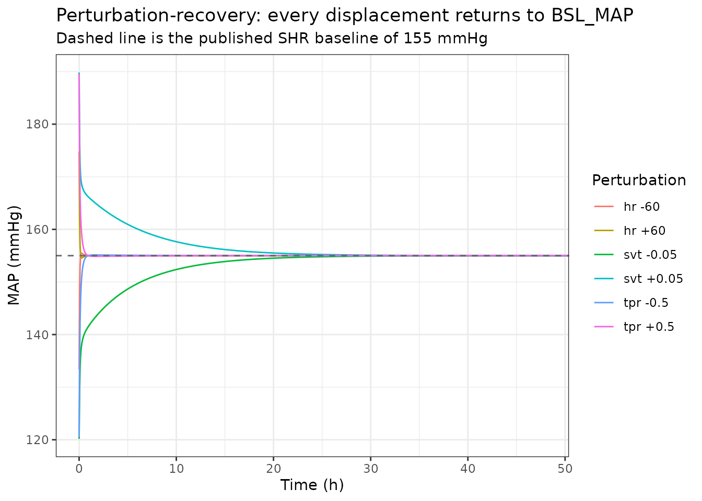

Extended cardiovascular systems (CVS) model, rat (Snelder 2014)
Source:vignettes/articles/Snelder_2014_cardiovascular_rat.Rmd
Snelder_2014_cardiovascular_rat.RmdModel and source
- Citation: Snelder N, Ploeger BA, Luttringer O, Rigel DF, Fu F, Beil M, Stanski DR, Danhof M. Drug effects on the CVS in conscious rats: separating cardiac output into heart rate and stroke volume using PKPD modelling. Br J Pharmacol. 2014 Nov;171(22):5076-5092. doi:10.1111/bph.12824. PMCID PMC4253457.
- Article (open access): Br J Pharmacol 2014;171(22):5076-5092 (PMCID PMC4253457)
Snelder 2014 challenged the cardiovascular system of conscious rats with eight drugs of deliberately diverse mechanism – amiloride, amlodipine, atropine, enalapril, fasudil, hydrochlorothiazide (HCTZ), prazosin and propranolol – and analysed every animal and every compound simultaneously in one NONMEM run. The design separates system-specific parameters, which every compound must share, from drug-specific parameters. Two rat strains were used: the spontaneously hypertensive rat (SHR) and its normotensive control strain, the Wistar-Kyoto (WKY) rat.
The paper’s structural contribution is to parse cardiac output into heart rate and stroke volume. Where the Snelder 2013 predecessor had two turnover states (CO and TPR), this model has three:
- HR, heart rate (beats/min)
-
SVT, the stroke-volume turnover state (mL/beat) –
written
SV*in the paper - TPR, total peripheral resistance (mmHg/(mL/min))
all three suppressed by a single shared linear negative feedback of
MAP. Actual stroke volume adds a direct inverse log-linear coupling to
heart rate, SV = SVT * (1 - HR_SV * ln(HR / BSL_HR)),
representing the shortening of left-ventricular filling time as the
cardiac interval shortens; then CO = HR * SV and
MAP = CO * TPR. Two 24 h cosines multiply the HR and TPR
production rates, and an exponentially decaying handling artefact –
brief manual restraint and oral gavage – transiently raises both.
The production rate constants are not estimated: they are derived from the baselines and dissipation rate constants so the system sits at its reported baseline (Equation 5). The feedback constant is likewise not a free per-strain parameter: it is a power function of the animal’s own baseline MAP (Equation 9), which is how the paper’s finding that feedback is roughly twice as strong in normotensive as in hypertensive rats is expressed.
Relationship to the two sibling models in nlmixr2lib
nlmixr2lib ships two other members of the Snelder CVS family, and their parameter sets must not be mixed.
| Model | Structure | Feedback | Circadian | Provenance |
|---|---|---|---|---|
Snelder_2013_cardiovascular_rat |
2 states (CO, TPR) | two constants, FB1 on CO and FB2 on TPR | five-harmonic cosine, additive on MAP | fitted, SHR only |
Snelder_2014_cardiovascular_rat (this file) |
3 states (HR, SVT, TPR) | one shared constant, a power function of individual BSL_MAP | two cosines, multiplicative on Kin_HR and Kin_TPR | fitted, SHR + WKY |
Fu_2023_cardiovascular_qsp |
3 states (HR, SVT, TPR) | one shared constant, fixed at 0.0029 | two cosines, multiplicative | inherits this paper’s system parameters, with a hypothetical drug |
Fu_2023_cardiovascular_qsp is a
stochastic-simulation-and-re-estimation identifiability study that fixes
the system parameters to “the parameter values from the published CVS
model”. Its vignette records that “the Snelder 2013, 2014 papers that
supply the rat baseline values are not on disk”. This extraction closes
that gap for the 2014 paper: every value below is transcribed from the
primary source. Fu 2023’s Supplemental S1 NONMEM control stream is used
in one place only – to settle whether Table 5’s IIV and residual “CV%”
columns are standard deviations or the log-normal
sqrt(exp(omega) - 1) form – and that use is flagged
explicitly where it occurs.
Population
pop <- nlmixr2lib::readModelDb("Snelder_2014_cardiovascular_rat")()$population
tibble::tibble(
Field = names(pop),
Value = vapply(pop, function(x) paste(as.character(x), collapse = "; "), character(1))
) |>
knitr::kable(caption = "Study population (Snelder 2014 Methods and Table 1)")| Field | Value |
|---|---|
| species | rat (male spontaneously hypertensive rat, SHR, and male normotensive Wistar-Kyoto rat, WKY; both Taconic Farms) |
| n_subjects | 12 |
| n_studies | 2 |
| study_names | Study 1 (single administrations of different doses on separate days, one vehicle day first; MAP, HR and SV measured with CO and TPR derived; amiloride, amlodipine, enalapril, fasudil, hydrochlorothiazide or prazosin; SHR and WKY rats); Study 2 (single, sequential or combined administration of atropine 10 mg/kg and/or propranolol 30 mg/kg with a 3 h interval; SHR only, 8 rats) |
| age_range | 41-54 weeks (SHR) and 35-38 weeks (WKY) at time of study. |
| weight_range | 367-504 g (SHR) and 499-600 g (WKY). |
| sex_female_pct | 0 |
| sex_notes | All animals were male (Methods, ‘Animals’). |
| disease_state | Spontaneous (genetic) hypertension in the SHR arm (BSL_MAP = 155 mmHg) versus normotension in the WKY arm (BSL_MAP = 102 mmHg); no induced disease model. Snelder 2014 states in the Conclusions that applications of the identified system-parameter set are limited to SHR and WKY rats. |
| dose_range | Study 1 (p.o., one dose per day on separate days after a vehicle day): amiloride 10 mg/kg; amlodipine 0.3, 1, 3, 10 mg/kg; enalapril 3, 10, 30 mg/kg; fasudil 3, 10, 30 mg/kg; hydrochlorothiazide 0.1, 0.3, 1, 3 mg/kg (first occasion) and 10, 30 mg/kg (second occasion); prazosin 0.04, 0.2, 1, 5 mg/kg. Study 2 (p.o.): atropine 10 mg/kg and propranolol 30 mg/kg, alone, sequentially 3 h apart, or combined. All compounds were given by oral gavage at 2 mL/kg. |
| regions | Preclinical; in-life work at Novartis Institutes for BioMedical Research, East Hanover, NJ, USA, with modelling at Leiden Academic Centre for Drug Research, The Netherlands. |
| instrumentation | Rats were surgically instrumented with BOTH an ascending-aortic transit-time flow probe and a femoral-artery catheter / radiotransmitter (as in Snelder et al. 2013a), giving continuous MAP, HR and CO. Flow cables were disconnected between 1700 h and 0700 h, so overnight only MAP and HR were captured. On experiment days baseline data were collected 0700-1000 h, drug was given at 1000 h (and at 1300 h in Study 2), and collection continued to 1700 h. Rats were housed on a 12 h light/dark cycle with lights on 0600-1800 h. |
| n_ode_states | 5 |
| notes | Ten SHR and two WKY rats were used across both studies, with repeated experiments in the same animals over periods of up to 6 months and sufficient washout between them, so the per-compound counts in Table 1 reflect reuse rather than distinct animals. Data from one SHR in Study 2 were excluded because it learned to disconnect its flow cable and responded far more strongly than the others. SV and TPR were never estimated directly: experimentally they were derived from the measured MAP, CO and HR, and in the modelling BSL_HR, BSL_MAP and BSL_CO were the estimated parameters with BSL_SV and BSL_TPR derived from them. Only HR, MAP and CO carry residual-error models for the same reason. The system was initialised at t = 0 h and pharmacological intervention started at t = 336 h (two weeks, determined empirically) so that the circadian oscillation had settled into its oscillating steady state before dosing; since dosing occurred at 1000 h clock time, model time t = 0 corresponds to 1000 h. Propranolol was administered and modelled but its effect was too small to quantify, so it contributes no drug-specific parameters and no covariate column. |
Ten SHR and two WKY rats in total, aged 41-54 weeks (SHR) and 35-38 weeks (WKY), 367-504 g and 499-600 g respectively. All were male. Animals were reused across compounds over periods of up to 6 months with washout between experiments, so the per-compound counts in Table 1 are not distinct animals. Each rat carried both an ascending-aortic transit-time flow probe and a femoral-artery catheter/radiotransmitter, giving continuous MAP, HR and CO; SV and TPR were derived from those three, both experimentally and in the model. Data from one SHR were excluded because it learned to disconnect its flow cable.
Housing was a 12 h light/dark cycle with lights on 0600-1800 h. Baseline data were collected 0700-1000 h, drug was given at 1000 h (and again at 1300 h in Study 2), and collection continued to 1700 h.
Source trace
Every value in
inst/modeldb/therapeuticArea/Snelder_2014_cardiovascular_rat.R
comes from the locations below; the same references appear as
# comments on each ini() line.
A convenient property of Snelder 2014 Table 5 is that it reports the
estimate, the relative standard error and the 95% confidence interval
for every parameter. Those three are redundant –
estimate * (1 +/- 1.96 * RSE / 100) must reproduce the
printed interval – so the table validates its own transcription. The
check is run in code below and covers all 19 estimated parameters.
System-specific parameters (Table 5)
| Model parameter | Paper symbol | Value | Fixed? | RSE % | 95% CI | Source |
|---|---|---|---|---|---|---|
lrbase_HR_shr |
BSL_HR_SHR | 310 beats/min | 1.12 | 303 - 317 | Table 5 | |
lrbase_HR_wky |
BSL_HR_WKY | 323 beats/min | 1.61 | 313 - 333 | Table 5 | |
lrbase_MAP_shr |
BSL_MAP_SHR | 155 mmHg | 0.684 | 153 - 157 | Table 5 | |
lrbase_MAP_wky |
BSL_MAP_WKY | 102 mmHg | 0.884 | 100 - 104 | Table 5 | |
lrbase_CO_shr |
BSL_CO_SHR | 69.0 mL/min | 4.17 | 63.4 - 74.6 | Table 5 | |
lrbase_CO_wky |
BSL_CO_WKY | 129 mL/min | 1.47 | 125 - 133 | Table 5 | |
lkout_HR |
kout_HR | 11.6 1/h | 19.1 | 7.27 - 15.9 | Table 5 | |
lkout_SV |
kout_SV | 0.126 1/h | 30.7 | 0.0501 - 0.202 | Table 5 | |
lkout_TPR |
kout_TPR | 3.58 1/h | 29.1 | 1.54 - 5.62 | Table 5 | |
lfb0 |
FB0 | 0.00290 1/mmHg | 5.93 | 0.00256 - 0.00324 | Table 5 | |
e_bslmap_fb |
FB0_MAP | -1.98 | 10.6 | -2.39 - -1.57 | Table 5; Equation 9 | |
lhrsv |
HR_SV | 0.312 | 15.6 | 0.216 - 0.408 | Table 5 | |
lkhd |
kHD | 4.70 1/h | 8.19 | 3.95 - 5.45 | Table 5 | |
lphd_HR |
P_HR | 0.632 | 9.67 | 0.512 - 0.752 | Table 5 | |
lphd_TPR |
P_TPR | 0.331 | 12.9 | 0.247 - 0.415 | Table 5 | |
hor_HR |
hor_HR | 8.73 h | 3.10 | 8.20 - 9.26 | Table 5 | |
amp_HR |
amp_HR | 0.0918 | 5.15 | 0.0825 - 0.101 | Table 5 | |
hor_TPR |
hor_TPR | 19.3 h | 1.92 | 18.6 - 20.0 | Table 5 | |
amp_TPR_ratio |
amp_TPR | 1 (= amp_HR) | FIX | Table 5 row “ampTPR: Fixed to ampHR” |
BSL_SV and BSL_TPR are derived, not estimated: the
Data analysis section states that “the BSL_MAP and BSL_CO and BSL_HR
were estimated and BSL_SV and BSL_TPR were derived from these
parameters”, via BSL_SV = BSL_CO / BSL_HR and
BSL_TPR = BSL_MAP / BSL_CO.
Drug-specific parameters (Table 5, with site and direction from Table 4)
The site of action and the direction of each effect come from Table
4’s “Effect” column and are restated verbatim in the Figure 3, S1 and S2
captions. Table 5 reports only the magnitude, so the model file keeps
every number byte-identical to the table and applies the sign in
model().
| Compound | Site | Direction | Form | Parameters | Source |
|---|---|---|---|---|---|
| Amiloride | SV | inhibit | Emax, Emax FIX 1 | EC50 245 ng/mL (RSE 25.1, CI 125-365) | Table 5; Table 4; Fig. S1 caption |
| Amlodipine | TPR | inhibit | Emax, Emax FIX 1 | EC50 82.8 ng/mL (RSE 4.99, CI 74.7-90.9) | Table 5; Table 4; Fig. 3 caption |
| Atropine | HR | stimulate | linear | SL 0.00149 per ng/mL (RSE 32.3, CI 0.000547-0.00243) | Table 5; Table 4; Fig. S2 caption |
| Enalapril | TPR and SV | inhibit | Emax, Emax FIX 1, effect cmt | EC50 1200 ng/mL (RSE 4.03, CI 1110-1290); ke0 0.163 1/h (RSE 5.07, CI 0.147-0.179) | Table 5; Table 4; Fig. S1 caption |
| Fasudil | TPR | inhibit | Emax, Emax FIX 1 | EC50 0.172 ng/mL (RSE 18.4, CI 0.110-0.234) | Table 5; Table 4; Fig. S1 caption |
| HCTZ | SV | inhibit | Emax, Emax FIX 1 | EC50 28900 ng/mL (RSE 7.65, CI 24600-33200) | Table 5; Table 4; Fig. S1 caption |
| Prazosin | TPR | inhibit | power | SL 0.328 (RSE 5.58, CI 0.292-0.364); POW 0.0910 (RSE 6.05, CI 0.0802-0.102) | Table 5; Table 4; Fig. S1 caption |
| Propranolol | HR | inhibit | – | none: “the effect of propranolol was too small to be quantified” | Results, Drug effects |
Emax is fixed to 1 for the five Emax compounds. Table 3 Assumption 2: “For compounds for which the maximum effect was not observed, complete inhibition (i.e. Emax = 1) was assumed at infinite concentrations to ensure identification of the EC50 parameter.” Each Table 5 sub-heading repeats it.
Two drug-specific parameters in Table 5 are not carried in the model file because they belong to literature PK models the paper does not otherwise publish: atropine’s Ka (1.17 1/h) and prazosin’s Ka (fixed to 99 1/h, stated in the Results rather than tabulated). Neither reconstructs a concentration-time profile on its own; see Assumptions and deviations.
Variability (Table 5)
| Model parameter | Paper row | Reported | Encoded |
|---|---|---|---|
etalrbase_HR |
BSL_HR (CV%) | 6.1 | variance 0.003721 |
etalrbase_MAP |
BSL_MAP (CV%) | 3.7 | variance 0.001369 |
etalrbase_CO |
BSL_CO (CV%) | 22.7 | variance 0.051529 |
propSd_HR |
Prop. Res. Error HR (CV%) | 7.8 | SD 0.078 |
propSd_MAP |
Prop. Res. Error MAP (CV%) | 6.0 | SD 0.060 |
propSd_CO |
Prop. Res. Error CO (CV%) | 6.9 | SD 0.069 |
IIV is on the three estimated baselines only (Results: “interindividual variations in the baseline values of the parameters, BSL_HR, BSL_MAP and BSL_CO, were allowed”), and residual error is proportional on the three measured readouts only (“The residual errors of TPR and SV were derived from these parameters”), which is why SV and TPR are exposed as outputs with no error model.
The IIV encoding turns on whether Table 5’s “CV%” is
sqrt(omega) * 100 or the exact log-normal
sqrt(exp(omega) - 1) * 100. Those differ by 2.5% for
BSL_CO, which is small but not nothing. Fu 2023 Supplemental S1, a
NONMEM control stream that re-encodes this same model, settles it: its
$OMEGA values are 0.00372, 0.00137 and 0.0515, whose square
roots are exactly 6.1%, 3.7% and 22.7%. The model file therefore uses
variance = (CV / 100)^2; the identity is checked in code
below.
Equations
| Model line | Paper |
|---|---|
d/dt(hr), d/dt(svt),
d/dt(tpr)
|
Equation 6 (= Equation 4 with the drug term added) |
sv <- svt * (1 - hrsv * log(hr / bsl_HR));
co <- hr * sv; map <- co * tpr
|
Equation 2 |
cr_HR, cr_TPR
|
Equation 3 |
hd_HR, hd_TPR,
d/dt(handling)
|
Equation 4 |
kin_HR, kin_SV, kin_TPR
|
Equation 5 |
eff_HR, eff_SV, eff_TPR
|
Equations 6 and 7 |
d/dt(effect) |
Equation 8 |
fb <- exp(lfb0) * (bsl_MAP / 155)^e_bslmap_fb |
Equation 9 |
bsl_SV, bsl_TPR
|
Data analysis narrative |
Note the asymmetry in Equation 6, which is the paper’s own: the circadian rhythm and the handling effect act on HR and TPR only, while all three states receive the MAP feedback and can receive a drug effect. SV has no circadian term of its own – the paper points out that the rhythm observed in SV, CO and MAP follows from the feedback and the HR coupling rather than being modelled directly.
Handling effect: closed form vs ODE state
Equation 4 writes the handling artefact as
HD_X = P_X * exp(-kHD * (t - tHD)) for
t > tHD. The model file realises it as a first-order
decay state receiving a unit impulse at each handling event. For a
single event the two are the same function; for the repeated handling of
Study 2 (dosing at 1000 h and again at 1300 h) the ODE superposes
correctly, whereas the closed form as printed covers one
tHD only. Both properties are verified below. The practical
consequence for a user is that handling events are supplied as
amt = 1, evid = 1, cmt = "handling" dose records.
Dimensional analysis
| Term | Units of the factors | Result |
|---|---|---|
kin_HR = kout_HR * bsl_HR / fb_bsl |
(1/h) * (beats/min) / 1 | (beats/min)/h |
d/dt(hr) = kin_HR * (1 + cr_HR) * (1 - fb * map) * (1 + eff_HR + hd_HR) - kout_HR * hr |
(beats/min)/h * 1 * 1 * 1 - (1/h)*(beats/min) | (beats/min)/h |
fb * map |
(1/mmHg) * mmHg | unitless |
fb = exp(lfb0) * (bsl_MAP / 155)^e_bslmap_fb |
(1/mmHg) * (mmHg/mmHg)^unitless | 1/mmHg |
cr_HR = amp_HR * cos(2 * pi * (t + hor_HR) / 24) |
1 * cos(h/h) | unitless |
hd_HR = phd_HR * handling |
1 * 1 | unitless |
sv = svt * (1 - hrsv * log(hr / bsl_HR)) |
(mL/beat) * (1 - 1 * log(1)) | mL/beat |
co = hr * sv |
(beats/min) * (mL/beat) | mL/min |
map = co * tpr |
(mL/min) * mmHg/(mL/min) | mmHg |
eff_HR = slope_atropine * CP_ATROPINE_NGML |
(mL/ng) * (ng/mL) | unitless |
Emax terms emax * C / (ec50 + C)
|
1 * (ng/mL)/(ng/mL) | unitless |
d/dt(effect) = ke0 * (C - effect) |
(1/h) * (ng/mL) | (ng/mL)/h |
d/dt(handling) = -khd * handling |
(1/h) * 1 | 1/h |
One published unit is inconsistent as printed. Table 5 labels the
prazosin power coefficient SL as (ng mL-1)-1, but for
EFF = SL * C^POW to be unitless SL must carry
(ng/mL)^-POW, i.e. (ng/mL)^-0.0910. The value
is used exactly as printed and the label is not “corrected” – the file
reproduces the paper – but the discrepancy is recorded here and in the
parameter’s label().
Load the model and set up
mod <- nlmixr2lib::readModelDb("Snelder_2014_cardiovascular_rat")
ui <- rxode2::rxode2(mod)
#> ℹ parameter labels from comments will be replaced by 'label()'
tv <- rxode2::zeroRe(ui) # typical-value model: etas and residual error zeroed
rxode2::rxSetSeed(20261102)
# Published values, restated here so every check below compares against the
# PAPER rather than against the model file it is meant to be testing.
pub <- list(
BSL_HR_SHR = 310, BSL_MAP_SHR = 155, BSL_CO_SHR = 69.0,
BSL_HR_WKY = 323, BSL_MAP_WKY = 102, BSL_CO_WKY = 129,
kout_HR = 11.6, kout_SV = 0.126, kout_TPR = 3.58,
FB0 = 0.00290, FB0_MAP = -1.98, HR_SV = 0.312,
kHD = 4.70, P_HR = 0.632, P_TPR = 0.331,
hor_HR = 8.73, amp_HR = 0.0918, hor_TPR = 19.3,
EC50_amiloride = 245, EC50_amlodipine = 82.8, SL_atropine = 0.00149,
EC50_enalapril = 1200, ke0_enalapril = 0.163, EC50_fasudil = 0.172,
EC50_hctz = 28900, SL_prazosin = 0.328, POW_prazosin = 0.0910,
CV_BSL_HR = 6.1, CV_BSL_MAP = 3.7, CV_BSL_CO = 22.7,
CV_res_HR = 7.8, CV_res_MAP = 6.0, CV_res_CO = 6.9
)
CP_COLS <- c("CP_AMILORIDE_NGML", "CP_AMLODIPINE_NGML", "CP_ATROPINE_NGML",
"CP_ENALAPRIL_NGML", "CP_FASUDIL_NGML", "CP_HCTZ_NGML",
"CP_PRAZOSIN_NGML")The model is a multi-endpoint model with three observed readouts, so
observation records name the endpoint in cmt
("HR", "MAP", "CO"); the solver
returns every derived quantity, including the unobserved SV
and TPR, as columns alongside them. Handling events are
dose records into the handling state.
# Build an event table: observations of the three measured readouts on a regular
# grid, optional handling impulses, all seven exposure columns defaulting to 0.
cvs_events <- function(tmax, by = 0.05, strain = 1, handling_times = numeric(0),
exposure = list()) {
tt <- seq(0, tmax, by = by)
obs <- do.call(rbind, lapply(c("HR", "MAP", "CO"), function(e) {
data.frame(time = tt, amt = NA_real_, evid = 0L, cmt = e)
}))
if (length(handling_times) > 0) {
obs <- rbind(obs, data.frame(time = handling_times, amt = 1,
evid = 1L, cmt = "handling"))
}
obs$id <- 1L
obs$STRAIN_SHR <- strain
for (nm in CP_COLS) obs[[nm]] <- 0
for (nm in names(exposure)) obs[[nm]] <- exposure[[nm]]
obs[order(obs$time, obs$evid), ]
}
# Solve the typical-value model and return one row per time point.
cvs_solve <- function(ev, ...) {
s <- rxode2::rxSolve(tv, ev, omega = NA, returnType = "data.frame",
addDosing = FALSE, ...)
keep <- c("time", "HR", "MAP", "CO", "SV", "TPR", "effect", "handling",
"bsl_HR", "bsl_MAP", "bsl_CO", "bsl_SV", "bsl_TPR", "fb",
"kin_HR", "kin_SV", "kin_TPR")
unique(s[, keep])
}1. Table 5 validates its own transcription
Every estimated parameter in Table 5 is printed with a value, an RSE
and a 95% confidence interval. The Wald interval
value * (1 +/- 1.96 * RSE/100) must reproduce the printed
bounds, so a mistyped digit in any one of the three shows up
immediately. This check covers all 19 estimated parameters.
tab5 <- tibble::tribble(
~parameter, ~value, ~rse, ~llci, ~ulci,
"BSL_HR_SHR", 310, 1.12, 303, 317,
"BSL_MAP_SHR", 155, 0.684, 153, 157,
"BSL_CO_SHR", 69.0, 4.17, 63.4, 74.6,
"BSL_HR_WKY", 323, 1.61, 313, 333,
"BSL_MAP_WKY", 102, 0.884, 100, 104,
"BSL_CO_WKY", 129, 1.47, 125, 133,
"kout_HR", 11.6, 19.1, 7.27, 15.9,
"kout_SV", 0.126, 30.7, 0.0501, 0.202,
"kout_TPR", 3.58, 29.1, 1.54, 5.62,
"FB0", 0.00290, 5.93, 0.00256, 0.00324,
"FB0_MAP", -1.98, 10.6, -2.39, -1.57,
"HR_SV", 0.312, 15.6, 0.216, 0.408,
"kHD", 4.70, 8.19, 3.95, 5.45,
"P_HR", 0.632, 9.67, 0.512, 0.752,
"P_TPR", 0.331, 12.9, 0.247, 0.415,
"hor_HR", 8.73, 3.10, 8.20, 9.26,
"amp_HR", 0.0918, 5.15, 0.0825, 0.101,
"hor_TPR", 19.3, 1.92, 18.6, 20.0,
"EC50_amiloride", 245, 25.1, 125, 365,
"EC50_amlodipine", 82.8, 4.99, 74.7, 90.9,
"SL_atropine", 0.00149, 32.3, 0.000547, 0.00243,
"EC50_enalapril", 1200, 4.03, 1110, 1290,
"ke0_enalapril", 0.163, 5.07, 0.147, 0.179,
"EC50_fasudil", 0.172, 18.4, 0.110, 0.234,
"EC50_hctz", 28900, 7.65, 24600, 33200,
"SL_prazosin", 0.328, 5.58, 0.292, 0.364,
"POW_prazosin", 0.0910, 6.05, 0.0802, 0.102
)
# Every number in Table 5 is printed to three significant figures, so the
# comparison tolerance is set by that rounding rather than chosen by hand. One
# unit in the last printed place is `ulp()`; the reconstructed width can differ
# from the printed one by up to half a ulp on each bound, plus the propagated
# effect of rounding the estimate and the RSE themselves.
ulp <- function(x) 10^(floor(log10(abs(x))) - 2)
tab5 <- tab5 |>
dplyr::mutate(
se = abs(value) * rse / 100,
wald_low = value - 1.96 * se,
wald_high = value + 1.96 * se,
printed_width = ulci - llci,
wald_width = wald_high - wald_low,
tol = 1.25 * ((ulp(llci) + ulp(ulci)) / 2 +
2 * 1.96 * (ulp(value) / 2 * rse / 100 +
abs(value) * ulp(rse) / 100 / 2)),
ok = abs(wald_width - printed_width) <= tol,
headroom = tol / abs(wald_width - printed_width)
)
tab5 |>
dplyr::transmute(Parameter = parameter, Value = value, `RSE %` = rse,
`Printed CI` = sprintf("%.4g to %.4g", llci, ulci),
`Wald CI from RSE` = sprintf("%.4g to %.4g", wald_low, wald_high),
`Width discrepancy` = sprintf("%.3g", abs(wald_width - printed_width)),
`Rounding tolerance` = sprintf("%.3g", tol),
OK = ok) |>
knitr::kable(caption = "Snelder 2014 Table 5 is internally redundant: the RSE reconstructs the printed 95% CI for every estimated parameter, to within the rounding of the printed numbers.")| Parameter | Value | RSE % | Printed CI | Wald CI from RSE | Width discrepancy | Rounding tolerance | OK |
|---|---|---|---|---|---|---|---|
| BSL_HR_SHR | 3.10e+02 | 1.120 | 303 to 317 | 303.2 to 316.8 | 0.39 | 1.35 | TRUE |
| BSL_MAP_SHR | 1.55e+02 | 0.684 | 153 to 157 | 152.9 to 157.1 | 0.156 | 1.27 | TRUE |
| BSL_CO_SHR | 6.90e+01 | 4.170 | 63.4 to 74.6 | 63.36 to 74.64 | 0.079 | 0.152 | TRUE |
| BSL_HR_WKY | 3.23e+02 | 1.610 | 313 to 333 | 312.8 to 333.2 | 0.385 | 1.37 | TRUE |
| BSL_MAP_WKY | 1.02e+02 | 0.884 | 100 to 104 | 100.2 to 103.8 | 0.465 | 1.27 | TRUE |
| BSL_CO_WKY | 1.29e+02 | 1.470 | 125 to 133 | 125.3 to 132.7 | 0.567 | 1.32 | TRUE |
| kout_HR | 1.16e+01 | 19.100 | 7.27 to 15.9 | 7.257 to 15.94 | 0.0552 | 0.144 | TRUE |
| kout_SV | 1.26e-01 | 30.700 | 0.0501 to 0.202 | 0.05018 to 0.2018 | 0.000267 | 0.00175 | TRUE |
| kout_TPR | 3.58e+00 | 29.100 | 1.54 to 5.62 | 1.538 to 5.622 | 0.00378 | 0.0284 | TRUE |
| FB0 | 2.90e-03 | 5.930 | 0.00256 to 0.00324 | 0.002563 to 0.003237 | 5.88e-06 | 1.47e-05 | TRUE |
| FB0_MAP | -1.98e+00 | 10.600 | -2.39 to -1.57 | -2.391 to -1.569 | 0.00273 | 0.0199 | TRUE |
| HR_SV | 3.12e-01 | 15.600 | 0.216 to 0.408 | 0.2166 to 0.4074 | 0.00121 | 0.0024 | TRUE |
| kHD | 4.70e+00 | 8.190 | 3.95 to 5.45 | 3.946 to 5.454 | 0.00893 | 0.0157 | TRUE |
| P_HR | 6.32e-01 | 9.670 | 0.512 to 0.752 | 0.5122 to 0.7518 | 0.000432 | 0.00164 | TRUE |
| P_TPR | 3.31e-01 | 12.900 | 0.247 to 0.415 | 0.2473 to 0.4147 | 0.00062 | 0.00238 | TRUE |
| hor_HR | 8.73e+00 | 3.100 | 8.2 to 9.26 | 8.2 to 9.26 | 0.00087 | 0.0154 | TRUE |
| amp_HR | 9.18e-02 | 5.150 | 0.0825 to 0.101 | 0.08253 to 0.1011 | 3.26e-05 | 0.000723 | TRUE |
| hor_TPR | 1.93e+01 | 1.920 | 18.6 to 20 | 18.57 to 20.03 | 0.0526 | 0.134 | TRUE |
| EC50_amiloride | 2.45e+02 | 25.100 | 125 to 365 | 124.5 to 365.5 | 1.06 | 2.47 | TRUE |
| EC50_amlodipine | 8.28e+01 | 4.990 | 74.7 to 90.9 | 74.7 to 90.9 | 0.00366 | 0.158 | TRUE |
| SL_atropine | 1.49e-03 | 32.300 | 0.000547 to 0.00243 | 0.0005467 to 0.002433 | 3.58e-06 | 1.84e-05 | TRUE |
| EC50_enalapril | 1.20e+03 | 4.030 | 1110 to 1290 | 1105 to 1295 | 9.57 | 13.8 | TRUE |
| ke0_enalapril | 1.63e-01 | 5.070 | 0.147 to 0.179 | 0.1468 to 0.1792 | 0.000395 | 0.00141 | TRUE |
| EC50_fasudil | 1.72e-01 | 18.400 | 0.11 to 0.234 | 0.11 to 0.234 | 6.02e-05 | 0.00212 | TRUE |
| EC50_hctz | 2.89e+04 | 7.650 | 2.46e+04 to 3.32e+04 | 2.457e+04 to 3.323e+04 | 66.5 | 151 | TRUE |
| SL_prazosin | 3.28e-01 | 5.580 | 0.292 to 0.364 | 0.2921 to 0.3639 | 0.000255 | 0.00147 | TRUE |
| POW_prazosin | 9.10e-02 | 6.050 | 0.0802 to 0.102 | 0.08021 to 0.1018 | 0.000218 | 0.000725 | TRUE |
cat(sprintf("all %d parameters consistent: %s (tightest row: %s, %.2fx headroom)\n",
nrow(tab5), all(tab5$ok),
tab5$parameter[which.min(tab5$headroom)], min(tab5$headroom)))
#> all 27 parameters consistent: TRUE (tightest row: EC50_enalapril, 1.44x headroom)
stopifnot(
# Every reconstructed interval width matches the printed one within rounding.
all(tab5$ok),
# The printed estimate lies strictly inside its own printed interval.
all(tab5$value > tab5$llci & tab5$value < tab5$ulci),
# And the printed interval is symmetric about the estimate, as a Wald interval
# must be -- asymmetry would mean the interval is not the one the RSE implies.
all(abs((tab5$ulci - tab5$value) - (tab5$value - tab5$llci)) <=
tab5$tol + ulp(tab5$value))
)This matters most for EC50_fasudil = 0.172 ng/mL, which
is roughly 1900-fold away from the 321 ng/mL that Snelder 2013 reported
for the same compound on the same experimental platform. Because 0.172
reconstructs its own printed interval (0.110 to 0.234) exactly, the
value is not a transcription or PDF-extraction artefact: it is what the
paper reports. See Assumptions and deviations.
2. Baseline steady-state hold
With no drug, no handling and the circadian amplitude set to zero,
the system must sit exactly at its reported baseline forever – that is
what Equation 5 constructs Kin to guarantee. This is run in
both strains, because the strain enters through three different
baselines and, via Equation 9, through the feedback constant as
well.
ss_check <- function(strain) {
s <- cvs_solve(cvs_events(48, by = 0.25, strain = strain), params = c(amp_HR = 0))
tibble::tibble(
Strain = if (strain == 1) "SHR" else "WKY",
HR = s$HR[1], MAP = s$MAP[1], CO = s$CO[1], SV = s$SV[1], TPR = s$TPR[1],
`max drift HR` = max(abs(s$HR - s$HR[1])),
`max drift MAP` = max(abs(s$MAP - s$MAP[1])),
`max drift CO` = max(abs(s$CO - s$CO[1]))
)
}
ss <- dplyr::bind_rows(ss_check(1), ss_check(0))
knitr::kable(ss, digits = 6,
caption = "Baseline steady-state hold over 48 h with the circadian rhythm switched off.")| Strain | HR | MAP | CO | SV | TPR | max drift HR | max drift MAP | max drift CO |
|---|---|---|---|---|---|---|---|---|
| SHR | 310 | 155 | 69 | 0.222581 | 2.246377 | 0 | 0 | 0 |
| WKY | 323 | 102 | 129 | 0.399381 | 0.790698 | 0 | 0 | 0 |
stopifnot(
# The state does not move at all: this is an exact algebraic fixed point.
max(ss$`max drift HR`, ss$`max drift MAP`, ss$`max drift CO`) < 1e-8,
# And it sits on the published baselines.
abs(ss$HR[1] - pub$BSL_HR_SHR) < 1e-6,
abs(ss$MAP[1] - pub$BSL_MAP_SHR) < 1e-6,
abs(ss$CO[1] - pub$BSL_CO_SHR) < 1e-6,
abs(ss$HR[2] - pub$BSL_HR_WKY) < 1e-6,
abs(ss$MAP[2] - pub$BSL_MAP_WKY) < 1e-6,
abs(ss$CO[2] - pub$BSL_CO_WKY) < 1e-6
)The fixed point is not a coincidence of the numbers: at
HR = BSL_HR the HR-on-SV coupling term is
1 - HR_SV * ln(1) = 1, so SV = BSL_SV and
MAP = BSL_HR * BSL_SV * BSL_TPR = BSL_CO * BSL_TPR = BSL_MAP.
Substituting into Equation 5 gives production
= kout_X * BSL_X exactly, cancelling the loss term for each
of the three states.
3. Derived baselines BSL_SV and BSL_TPR
derived <- tibble::tibble(
Strain = c("SHR", "WKY"),
BSL_HR = c(pub$BSL_HR_SHR, pub$BSL_HR_WKY),
BSL_MAP = c(pub$BSL_MAP_SHR, pub$BSL_MAP_WKY),
BSL_CO = c(pub$BSL_CO_SHR, pub$BSL_CO_WKY)
) |>
dplyr::mutate(
`BSL_SV = BSL_CO/BSL_HR` = BSL_CO / BSL_HR,
`BSL_TPR = BSL_MAP/BSL_CO` = BSL_MAP / BSL_CO,
`model SV` = ss$SV,
`model TPR` = ss$TPR
)
knitr::kable(derived, digits = 6,
caption = "BSL_SV and BSL_TPR are derived from the three estimated baselines.")| Strain | BSL_HR | BSL_MAP | BSL_CO | BSL_SV = BSL_CO/BSL_HR | BSL_TPR = BSL_MAP/BSL_CO | model SV | model TPR |
|---|---|---|---|---|---|---|---|
| SHR | 310 | 155 | 69 | 0.222581 | 2.246377 | 0.222581 | 2.246377 |
| WKY | 323 | 102 | 129 | 0.399381 | 0.790698 | 0.399381 | 0.790698 |
stopifnot(
max(abs(derived$`BSL_SV = BSL_CO/BSL_HR` - derived$`model SV`)) < 1e-9,
max(abs(derived$`BSL_TPR = BSL_MAP/BSL_CO` - derived$`model TPR`)) < 1e-9
)The paper’s own qualitative statement follows: SHR have a lower BSL_SV and a higher BSL_TPR than WKY rats.
stopifnot(
derived$`model SV`[1] < derived$`model SV`[2],
derived$`model TPR`[1] > derived$`model TPR`[2]
)4. Equation 9: feedback declines with baseline MAP
Equation 9 is
FB = FB0 * (IBSL_MAP / TVBSL_MAP_SHR)^FB0_MAP, with
TVBSL_MAP_SHR = 155 mmHg, the SHR typical value, used as
the reference for both strains. The paper reports the
consequence rather than the WKY number: “Overall, the feedback is about
twofold higher in WKY rats as compared with SHR.” That statement is the
check.
fb_pub <- function(bsl_map) pub$FB0 * (bsl_map / pub$BSL_MAP_SHR)^pub$FB0_MAP
fb_tab <- tibble::tibble(
Strain = c("SHR", "WKY"),
BSL_MAP = c(pub$BSL_MAP_SHR, pub$BSL_MAP_WKY),
`FB (Eq 9)` = fb_pub(c(pub$BSL_MAP_SHR, pub$BSL_MAP_WKY)),
`FB (model)` = ss$MAP * 0 + c(
cvs_solve(cvs_events(1, by = 0.5, strain = 1), params = c(amp_HR = 0))$fb[1],
cvs_solve(cvs_events(1, by = 0.5, strain = 0), params = c(amp_HR = 0))$fb[1]
)
) |>
dplyr::mutate(`1 - FB*BSL_MAP` = 1 - `FB (model)` * BSL_MAP)
knitr::kable(fb_tab, digits = 6,
caption = "Feedback constant by strain (Equation 9, reference 155 mmHg).")| Strain | BSL_MAP | FB (Eq 9) | FB (model) | 1 - FB*BSL_MAP |
|---|---|---|---|---|
| SHR | 155 | 0.002900 | 0.002900 | 0.550500 |
| WKY | 102 | 0.006641 | 0.006641 | 0.322629 |
ratio <- fb_tab$`FB (model)`[2] / fb_tab$`FB (model)`[1]
cat(sprintf("WKY / SHR feedback ratio: %.3f\n", ratio))
#> WKY / SHR feedback ratio: 2.290
stopifnot(
# The model reproduces Equation 9 evaluated by hand.
max(abs(fb_tab$`FB (model)` - fb_tab$`FB (Eq 9)`)) < 1e-12,
# "About twofold higher in WKY rats" (Results, SHR versus WKY rats).
ratio > 1.8 && ratio < 2.8,
# The production-rate multiplier must stay positive in both strains or the
# steady-state Kin of Equation 5 would be negative.
all(fb_tab$`1 - FB*BSL_MAP` > 0)
)The 1 - FB*BSL_MAP column is worth noting for anyone
simulating large perturbations: it is 0.55 in SHR but only 0.32 in WKY
rats, so the normotensive strain has appreciably less headroom before
the production term would change sign.
5. Flux balance at the fixed point
At the (non-oscillating) baseline, production and loss must cancel exactly for each of the three turnover states. Done symbolically from the published values, independent of the solver.
flux <- function(bsl_map, bsl_hr, bsl_co) {
fb <- fb_pub(bsl_map)
bsl <- c(HR = bsl_hr, SV = bsl_co / bsl_hr, TPR = bsl_map / bsl_co)
kout <- c(HR = pub$kout_HR, SV = pub$kout_SV, TPR = pub$kout_TPR)
kin <- kout * bsl / (1 - fb * bsl_map)
tibble::tibble(State = names(bsl),
`Kin (Eq 5)` = unname(kin),
Production = unname(kin * (1 - fb * bsl_map)),
Loss = unname(kout * bsl),
Net = unname(kin * (1 - fb * bsl_map) - kout * bsl))
}
fl <- dplyr::bind_rows(
dplyr::mutate(flux(pub$BSL_MAP_SHR, pub$BSL_HR_SHR, pub$BSL_CO_SHR), Strain = "SHR"),
dplyr::mutate(flux(pub$BSL_MAP_WKY, pub$BSL_HR_WKY, pub$BSL_CO_WKY), Strain = "WKY")
) |>
dplyr::select(Strain, State, `Kin (Eq 5)`, Production, Loss, Net)
knitr::kable(fl, digits = 8,
caption = "Production and loss fluxes cancel at baseline. Note that Kin is the zero-order rate CONSTANT of Equation 5; the production FLUX is Kin * (1 - FB*MAP), which is what must equal the loss.")| Strain | State | Kin (Eq 5) | Production | Loss | Net |
|---|---|---|---|---|---|
| SHR | HR | 6.532243e+03 | 3.596000e+03 | 3.596000e+03 | 0 |
| SHR | SV | 5.094489e-02 | 2.804516e-02 | 2.804516e-02 | 0 |
| SHR | TPR | 1.460859e+01 | 8.042029e+00 | 8.042029e+00 | 0 |
| WKY | HR | 1.161334e+04 | 3.746800e+03 | 3.746800e+03 | 0 |
| WKY | SV | 1.559748e-01 | 5.032198e-02 | 5.032198e-02 | 0 |
| WKY | TPR | 8.773847e+00 | 2.830698e+00 | 2.830698e+00 | 0 |
# The solver's own Kin values must equal the hand computation from Equation 5.
ms <- cvs_solve(cvs_events(1, by = 0.5, strain = 1), params = c(amp_HR = 0))
kin_shr <- fl$`Kin (Eq 5)`[fl$Strain == "SHR"]
names(kin_shr) <- fl$State[fl$Strain == "SHR"]
stopifnot(
max(abs(fl$Net)) < 1e-9,
abs(ms$kin_HR[1] - kin_shr[["HR"]]) < 1e-9,
abs(ms$kin_SV[1] - kin_shr[["SV"]]) < 1e-9,
abs(ms$kin_TPR[1] - kin_shr[["TPR"]]) < 1e-9
)6. Circadian rhythm (Equation 3)
Two 24 h cosines multiply the HR and TPR production rates. The paper reports the amplitude as 0.09, “indicating that the variation in Kin_HR and Kin_TPR is maximally 9% during the day”, and states that the two horizontal displacements are significantly different, “even if one of the cosines would have been replaced by a sine (i.e. a shift of 12 h)”.
circ <- cvs_solve(cvs_events(336 + 48, by = 0.25, strain = 1))
last48 <- circ[circ$time >= 336, ]
circ_summary <- tibble::tibble(
Readout = c("HR", "MAP", "CO", "SV", "TPR"),
Mean = vapply(c("HR", "MAP", "CO", "SV", "TPR"),
function(v) mean(last48[[v]]), numeric(1)),
Min = vapply(c("HR", "MAP", "CO", "SV", "TPR"),
function(v) min(last48[[v]]), numeric(1)),
Max = vapply(c("HR", "MAP", "CO", "SV", "TPR"),
function(v) max(last48[[v]]), numeric(1))
) |>
dplyr::mutate(`Peak-to-trough, % of mean` = 100 * (Max - Min) / Mean)
knitr::kable(circ_summary, digits = 3,
caption = "Oscillating steady state over the last 48 h before intervention.")| Readout | Mean | Min | Max | Peak-to-trough, % of mean |
|---|---|---|---|---|
| HR | 310.326 | 279.734 | 342.098 | 20.096 |
| MAP | 154.812 | 152.157 | 157.438 | 3.412 |
| CO | 69.060 | 64.453 | 73.749 | 13.460 |
| SV | 0.223 | 0.215 | 0.231 | 6.790 |
| TPR | 2.248 | 2.068 | 2.430 | 16.108 |
last48 |>
dplyr::select(time, HR, MAP, CO, SV, TPR) |>
tidyr::pivot_longer(-time, names_to = "Readout", values_to = "Value") |>
ggplot2::ggplot(ggplot2::aes(time - 336, Value)) +
ggplot2::geom_line() +
ggplot2::facet_wrap(~Readout, scales = "free_y", ncol = 2) +
ggplot2::labs(x = "Time (h) after the 336 h initialisation period",
y = NULL,
title = "Circadian rhythm in all five CVS readouts",
subtitle = "Cosines are applied to Kin_HR and Kin_TPR only; the rhythm in SV, CO and MAP follows from the feedback") +
ggplot2::theme_bw()
# The circadian rhythm is imposed on the production rates with amplitude 0.0918,
# so no readout's oscillation may exceed roughly twice that in relative terms.
stopifnot(all(circ_summary$`Peak-to-trough, % of mean` < 2 * 100 * pub$amp_HR * 1.2))
# Equation 5 sets Kin ignoring the rhythm, so the paper expects the oscillation
# to sit AROUND the baseline rather than on it. Confirm the mean is close.
mean_dev <- abs(circ_summary$Mean[circ_summary$Readout == "MAP"] / pub$BSL_MAP_SHR - 1)
cat(sprintf("mean MAP over the last 48 h is %.3f%% from BSL_MAP\n", 100 * mean_dev))
#> mean MAP over the last 48 h is 0.121% from BSL_MAP
stopifnot(mean_dev < 0.01)
# Phase. The production-rate cosines peak where 2*pi*(t + hor)/24 is a multiple
# of 2*pi, i.e. at t = 24 - hor (mod 24): 15.27 h for HR and 4.70 h for TPR. The
# STATE peak lags the production peak, so allow a couple of hours.
peak_hr <- (last48$time[which.max(last48$HR)]) %% 24
peak_tpr <- (last48$time[which.max(last48$TPR)]) %% 24
cat(sprintf("HR state peaks at t mod 24 = %.2f h (Kin_HR peak %.2f h)\n",
peak_hr, (24 - pub$hor_HR) %% 24))
#> HR state peaks at t mod 24 = 15.75 h (Kin_HR peak 15.27 h)
cat(sprintf("TPR state peaks at t mod 24 = %.2f h (Kin_TPR peak %.2f h)\n",
peak_tpr, (24 - pub$hor_TPR) %% 24))
#> TPR state peaks at t mod 24 = 4.50 h (Kin_TPR peak 4.70 h)
stopifnot(
abs(peak_hr - (24 - pub$hor_HR) %% 24) < 2,
abs(peak_tpr - (24 - pub$hor_TPR) %% 24) < 2
)Because dosing happened at 1000 h clock time and the paper started
pharmacological intervention at t = 336 h, which is exactly
14 x 24 h, model time t = 0 corresponds to 1000 h. On that
clock the HR production rate peaks at 0116 h and the TPR production rate
at 1442 h – HR in the dark phase and TPR in the light phase, which is
the expected direction for a nocturnal species on the paper’s 0600-1800
h light cycle. This is a consistency observation, not a paper claim.
7. Handling effect (Equation 4)
h1 <- cvs_solve(cvs_events(6, by = 0.02, handling_times = 0), params = c(amp_HR = 0))
h2 <- cvs_solve(cvs_events(6, by = 0.02, handling_times = c(0, 3)), params = c(amp_HR = 0))
closed_1 <- exp(-pub$kHD * h1$time)
closed_2 <- exp(-pub$kHD * h2$time) +
ifelse(h2$time >= 3, exp(-pub$kHD * (h2$time - 3)), 0)
cat(sprintf("single event : max |ODE state - exp(-kHD*t)| = %.2e\n",
max(abs(h1$handling - closed_1))))
#> single event : max |ODE state - exp(-kHD*t)| = 1.42e-08
cat(sprintf("two events : max |ODE state - superposition| = %.2e\n",
max(abs(h2$handling - closed_2))))
#> two events : max |ODE state - superposition| = 1.31e-07
cat(sprintf("handling half-life = %.4f h (ln(2)/kHD = %.4f h)\n",
stats::approx(h1$handling, h1$time, xout = 0.5)$y, log(2) / pub$kHD))
#> handling half-life = 0.1477 h (ln(2)/kHD = 0.1475 h)
stopifnot(
max(abs(h1$handling - closed_1)) < 1e-6,
max(abs(h2$handling - closed_2)) < 1e-6,
abs(stats::approx(h1$handling, h1$time, xout = 0.5)$y - log(2) / pub$kHD) < 1e-3
)
h2 |>
dplyr::select(time, HR, MAP, CO, SV, TPR) |>
tidyr::pivot_longer(-time, names_to = "Readout", values_to = "Value") |>
ggplot2::ggplot(ggplot2::aes(time, Value)) +
ggplot2::geom_line() +
ggplot2::geom_vline(xintercept = c(0, 3), linetype = "dashed", colour = "grey50") +
ggplot2::facet_wrap(~Readout, scales = "free_y", ncol = 2) +
ggplot2::labs(x = "Time (h)", y = NULL,
title = "Handling artefact after vehicle administration at 0 h and 3 h",
subtitle = "Reproduces the qualitative pattern of Snelder 2014 Figure 2: HR, TPR, CO and MAP rise, SV falls") +
ggplot2::theme_bw()
The paper’s description of the artefact (Methods, “Data analysis”) is that handling “caused a temporary increase in HR, TPR, CO and MAP and decrease in SV that was independent of drug exposure”. The model reproduces all five directions even though the handling term appears only on the HR and TPR production rates: the SV fall is a consequence of the direct HR-on-SV coupling, and the CO and MAP rises follow from the products.
peak <- function(v) h1[[v]][which.max(abs(h1[[v]] - h1[[v]][1]))]
dirs <- tibble::tibble(
Readout = c("HR", "TPR", "CO", "MAP", "SV"),
Baseline = vapply(c("HR", "TPR", "CO", "MAP", "SV"), function(v) h1[[v]][1], numeric(1)),
Extreme = vapply(c("HR", "TPR", "CO", "MAP", "SV"), peak, numeric(1))
) |>
dplyr::mutate(`% change at the extreme` = 100 * (Extreme / Baseline - 1))
knitr::kable(dirs, digits = 4,
caption = "Direction of the handling effect on each readout (single event at t = 0).")| Readout | Baseline | Extreme | % change at the extreme |
|---|---|---|---|
| HR | 310.0000 | 374.7209 | 20.8777 |
| TPR | 2.2464 | 2.3260 | 3.5451 |
| CO | 69.0000 | 78.3787 | 13.5923 |
| MAP | 155.0000 | 182.2729 | 17.5954 |
| SV | 0.2226 | 0.2091 | -6.0462 |
stopifnot(
dirs$`% change at the extreme`[dirs$Readout == "HR"] > 0,
dirs$`% change at the extreme`[dirs$Readout == "TPR"] > 0,
dirs$`% change at the extreme`[dirs$Readout == "CO"] > 0,
dirs$`% change at the extreme`[dirs$Readout == "MAP"] > 0,
dirs$`% change at the extreme`[dirs$Readout == "SV"] < 0
)8. Enalapril effect compartment (Equation 8)
Equation 8 is dCe/dt = ke0 * (C - Ce). Under a step
input of C held constant the analytical solution is
Ce(t) = C * (1 - exp(-ke0 * t)), and the time to reach half
the plateau is ln(2)/ke0, which the Results report as “the
half-life of this additional delay was 4.3 h”.
ev <- cvs_events(48, by = 0.05, exposure = list(CP_ENALAPRIL_NGML = pub$EC50_enalapril))
ec <- cvs_solve(ev, params = c(amp_HR = 0))
ana <- pub$EC50_enalapril * (1 - exp(-pub$ke0_enalapril * ec$time))
t_half <- stats::approx(ec$effect, ec$time, xout = pub$EC50_enalapril / 2)$y
cat(sprintf("max |Ce(ODE) - Ce(analytic)| = %.2e ng/mL\n", max(abs(ec$effect - ana))))
#> max |Ce(ODE) - Ce(analytic)| = 3.87e-06 ng/mL
cat(sprintf("half-time to plateau = %.3f h; ln(2)/ke0 = %.3f h; paper reports 4.3 h\n",
t_half, log(2) / pub$ke0_enalapril))
#> half-time to plateau = 4.252 h; ln(2)/ke0 = 4.252 h; paper reports 4.3 h
stopifnot(
max(abs(ec$effect - ana)) < 1e-3,
abs(t_half - log(2) / pub$ke0_enalapril) < 0.01,
abs(t_half - 4.3) < 0.15
)9. Concentration-effect forms (Equation 7)
Each compound’s EFF must have the defining property of
its published form: an Emax curve reaches Emax/2 at its own EC50; the
linear form is proportional to concentration with the published slope;
the power form has the published exponent. This checks that the
log-scale lec50_* entries were exponentiated correctly and
that the signs are the ones Table 4 specifies.
emax_form <- function(cc, ec50) cc / (ec50 + cc)
conc <- 10^seq(-3, 6, length.out = 200)
ce <- dplyr::bind_rows(
tibble::tibble(Compound = "amiloride (SV)", Conc = conc,
EFF = -emax_form(conc, pub$EC50_amiloride)),
tibble::tibble(Compound = "amlodipine (TPR)", Conc = conc,
EFF = -emax_form(conc, pub$EC50_amlodipine)),
tibble::tibble(Compound = "enalapril (TPR+SV)", Conc = conc,
EFF = -emax_form(conc, pub$EC50_enalapril)),
tibble::tibble(Compound = "fasudil (TPR)", Conc = conc,
EFF = -emax_form(conc, pub$EC50_fasudil)),
tibble::tibble(Compound = "HCTZ (SV)", Conc = conc,
EFF = -emax_form(conc, pub$EC50_hctz)),
tibble::tibble(Compound = "atropine (HR)", Conc = conc,
EFF = pub$SL_atropine * conc),
tibble::tibble(Compound = "prazosin (TPR)", Conc = conc,
EFF = -pub$SL_prazosin * conc^pub$POW_prazosin)
)
ce |>
dplyr::filter(EFF >= -1.05, EFF <= 1.05) |>
ggplot2::ggplot(ggplot2::aes(Conc, EFF, colour = Compound)) +
ggplot2::geom_line() +
ggplot2::geom_hline(yintercept = c(-1, -0.5, 0), linetype = "dotted", colour = "grey60") +
ggplot2::scale_x_log10() +
ggplot2::labs(x = "Plasma concentration (ng/mL, log scale)",
y = "EFF (signed; negative = inhibition of production)",
title = "Concentration-effect relationships (Snelder 2014 Equation 7, Table 5)") +
ggplot2::theme_bw()
# Emax forms: EFF = -0.5 exactly at the published EC50.
half <- c(amiloride = pub$EC50_amiloride, amlodipine = pub$EC50_amlodipine,
enalapril = pub$EC50_enalapril, fasudil = pub$EC50_fasudil,
hctz = pub$EC50_hctz)
stopifnot(max(abs(-emax_form(half, half) - (-0.5))) < 1e-12)
# Linear form: doubling the concentration doubles the effect.
stopifnot(abs(pub$SL_atropine * 2000 - 2 * (pub$SL_atropine * 1000)) < 1e-15)
# Power form: the exponent is recovered from the slope on the log-log scale.
pw <- diff(log(pub$SL_prazosin * c(10, 1000)^pub$POW_prazosin)) / diff(log(c(10, 1000)))
stopifnot(abs(pw - pub$POW_prazosin) < 1e-12)
# Prazosin's effect is far from maximal over the studied range, which is the
# paper's stated reason for preferring the power form.
cat(sprintf("prazosin EFF magnitude at 1 / 100 / 10000 ng/mL: %.3f / %.3f / %.3f\n",
pub$SL_prazosin * 1^pub$POW_prazosin,
pub$SL_prazosin * 100^pub$POW_prazosin,
pub$SL_prazosin * 10000^pub$POW_prazosin))
#> prazosin EFF magnitude at 1 / 100 / 10000 ng/mL: 0.328 / 0.499 / 0.758
stopifnot(pub$SL_prazosin * 10000^pub$POW_prazosin < 1)Fasudil’s EC50 of 0.172 ng/mL puts its curve four orders of magnitude to the left of every other compound in the plot. That is the discrepancy discussed in Assumptions and deviations, shown here rather than hidden.
10. Signature profiles: the direction of every drug effect
Snelder 2014’s central claim is that the site of action of a compound can be identified from the pattern of changes across MAP, CO, HR, SV and TPR – the “signature profile” of Figure 4 – and Table 4 plus the Figure 3, S1 and S2 captions state the expected pattern for each compound. This check drives each compound at a constant exposure and compares all five directions against the published description. It is deliberately PK-free: the directions are properties of the system model, not of the concentration-time profile.
drug_exposure <- list(
amiloride = list(CP_AMILORIDE_NGML = pub$EC50_amiloride),
amlodipine = list(CP_AMLODIPINE_NGML = pub$EC50_amlodipine),
atropine = list(CP_ATROPINE_NGML = 300),
enalapril = list(CP_ENALAPRIL_NGML = pub$EC50_enalapril),
fasudil = list(CP_FASUDIL_NGML = pub$EC50_fasudil),
hctz = list(CP_HCTZ_NGML = pub$EC50_hctz),
prazosin = list(CP_PRAZOSIN_NGML = 1)
)
sig_one <- function(nm) {
s <- cvs_solve(cvs_events(72, by = 0.1, exposure = drug_exposure[[nm]]),
params = c(amp_HR = 0))
n <- nrow(s)
tibble::tibble(
Compound = nm,
HR = 100 * (s$HR[n] / s$HR[1] - 1),
SV = 100 * (s$SV[n] / s$SV[1] - 1),
TPR = 100 * (s$TPR[n] / s$TPR[1] - 1),
CO = 100 * (s$CO[n] / s$CO[1] - 1),
MAP = 100 * (s$MAP[n] / s$MAP[1] - 1)
)
}
sig <- dplyr::bind_rows(lapply(names(drug_exposure), sig_one))
sig |>
dplyr::mutate(Site = c("SV", "TPR", "HR", "TPR + SV", "TPR", "SV", "TPR"),
Direction = c("inhibit", "inhibit", "stimulate", "inhibit",
"inhibit", "inhibit", "inhibit")) |>
dplyr::select(Compound, Site, Direction, HR, SV, TPR, CO, MAP) |>
knitr::kable(digits = 2,
caption = "Per cent change from baseline after 72 h of constant exposure. Site and direction are Snelder 2014 Table 4.")| Compound | Site | Direction | HR | SV | TPR | CO | MAP |
|---|---|---|---|---|---|---|---|
| amiloride | SV | inhibit | 18.02 | -44.04 | 18.02 | -33.96 | -22.06 |
| amlodipine | TPR | inhibit | 18.02 | 11.92 | -40.99 | 32.08 | -22.06 |
| atropine | HR | stimulate | 35.58 | -15.20 | -6.30 | 14.97 | 7.72 |
| enalapril | TPR + SV | inhibit | 35.59 | -38.64 | -32.20 | -16.80 | -43.59 |
| fasudil | TPR | inhibit | 18.02 | 11.92 | -40.99 | 32.08 | -22.06 |
| hctz | SV | inhibit | 18.02 | -44.04 | 18.02 | -33.96 | -22.06 |
| prazosin | TPR | inhibit | 10.29 | 6.92 | -25.89 | 17.92 | -12.60 |
get <- function(nm, v) sig[[v]][sig$Compound == nm]
stopifnot(
# Figure S1 caption, SV-acting compounds: "Amiloride and HCTZ have an
# inhibiting effect on SV. Therefore, SV and, consequently, CO, decrease ...
# As a result of the indirect feedback, HR and TPR increase. MAP changes in
# the same direction as the initial effect."
all(vapply(c("amiloride", "hctz"), function(d) {
get(d, "SV") < 0 && get(d, "CO") < 0 && get(d, "HR") > 0 &&
get(d, "TPR") > 0 && get(d, "MAP") < 0
}, logical(1))),
# Figure 3 / S1 captions, TPR-acting compounds: "TPR decreases ... As a result
# of the indirect feedback, HR, SV and CO increase ... MAP decreases."
all(vapply(c("amlodipine", "fasudil", "prazosin"), function(d) {
get(d, "TPR") < 0 && get(d, "HR") > 0 && get(d, "SV") > 0 &&
get(d, "CO") > 0 && get(d, "MAP") < 0
}, logical(1))),
# Figure S2 caption, atropine: "Atropine has a stimulating effect on HR.
# Therefore, HR and, consequently, CO, increase ... As a result of the
# indirect feedback, SV and TPR decrease. MAP changes in the same direction
# as the initial effect."
get("atropine", "HR") > 0, get("atropine", "CO") > 0,
get("atropine", "SV") < 0, get("atropine", "TPR") < 0,
get("atropine", "MAP") > 0,
# Figure S1 caption, enalapril: it inhibits TPR AND SV, so unlike the pure
# TPR-acting compounds "the initial decrease in SV is not reversed by the
# indirect feedback".
get("enalapril", "TPR") < 0, get("enalapril", "SV") < 0,
get("enalapril", "MAP") < 0,
# Figure 4: "inhibition of HR, SV or TPR always results in a decrease in MAP,
# demonstrating that homeostatic feedback cannot be stronger than the primary
# effect." Every inhibitory compound lowers MAP; the one stimulator raises it.
all(sig$MAP[sig$Compound != "atropine"] < 0),
sig$MAP[sig$Compound == "atropine"] > 0
)The transient SV dip under a TPR-acting compound
Figure 3’s caption calls out a second-order feature: under amlodipine “the initial decrease in SV is related to the direct inverse relationship between HR and SV”, and Figure S1 adds that “subsequently, this decrease is reversed by the indirect feedback”. The model must therefore take SV below baseline first and above baseline later – a sign change that the 72 h endpoint of the table above cannot see.
amlo <- cvs_solve(cvs_events(48, by = 0.02,
exposure = list(CP_AMLODIPINE_NGML = pub$EC50_amlodipine)),
params = c(amp_HR = 0))
enal <- cvs_solve(cvs_events(48, by = 0.02,
exposure = list(CP_ENALAPRIL_NGML = pub$EC50_enalapril)),
params = c(amp_HR = 0))
dplyr::bind_rows(
dplyr::mutate(amlo, Compound = "amlodipine (TPR only)"),
dplyr::mutate(enal, Compound = "enalapril (TPR and SV)")
) |>
dplyr::mutate(`SV, % of baseline` = 100 * SV / SV[1]) |>
dplyr::group_by(Compound) |>
dplyr::mutate(`SV, % of baseline` = 100 * SV / dplyr::first(SV)) |>
dplyr::ungroup() |>
ggplot2::ggplot(ggplot2::aes(time, `SV, % of baseline`, colour = Compound)) +
ggplot2::geom_line() +
ggplot2::geom_hline(yintercept = 100, linetype = "dashed", colour = "grey50") +
ggplot2::labs(x = "Time (h) of constant EC50-level exposure", y = "SV (% of baseline)",
title = "Stroke volume under a TPR-only versus a TPR-and-SV inhibitor",
subtitle = "Amlodipine: HR-coupled dip then feedback-driven recovery above baseline. Enalapril: no recovery.") +
ggplot2::theme_bw()
cat(sprintf("amlodipine SV: minimum %.2f%% of baseline at t = %.2f h, final %.2f%%\n",
100 * min(amlo$SV) / amlo$SV[1], amlo$time[which.min(amlo$SV)],
100 * amlo$SV[nrow(amlo)] / amlo$SV[1]))
#> amlodipine SV: minimum 95.20% of baseline at t = 0.62 h, final 111.91%
cat(sprintf("enalapril SV: minimum %.2f%% of baseline, final %.2f%%\n",
100 * min(enal$SV) / enal$SV[1],
100 * enal$SV[nrow(enal)] / enal$SV[1]))
#> enalapril SV: minimum 61.46% of baseline, final 61.46%
stopifnot(
# Amlodipine: dips below baseline, then recovers above it.
min(amlo$SV) < amlo$SV[1],
amlo$SV[nrow(amlo)] > amlo$SV[1],
# Enalapril: the SV effect is direct, so there is no recovery above baseline.
enal$SV[nrow(enal)] < enal$SV[1]
)Figure 4: the MAP delay is longer for an SV effect than for a TPR effect
The other Figure 4 claim is about timing rather than direction: “the
delay between the stimulus and the response for MAP was longer for the
drug effect on SV as compared with TPR.” The model’s mechanism for this
is kout_SV = 0.126 1/h against
kout_TPR = 3.58 1/h, a 28-fold difference in dissipation
rate.
t90 <- function(s) {
d <- s$MAP - s$MAP[1]
s$time[which(abs(d) >= abs(0.9 * d[nrow(s)]))[1]]
}
delay <- tibble::tibble(
Compound = names(drug_exposure),
Site = c("SV", "TPR", "HR", "TPR + SV", "TPR", "SV", "TPR"),
`t90 of the MAP change (h)` = vapply(names(drug_exposure), function(nm) {
t90(cvs_solve(cvs_events(120, by = 0.05, exposure = drug_exposure[[nm]]),
params = c(amp_HR = 0)))
}, numeric(1))
)
knitr::kable(delay, digits = 2,
caption = "Time to 90% of the final MAP change under constant exposure.")| Compound | Site | t90 of the MAP change (h) |
|---|---|---|
| amiloride | SV | 15.95 |
| amlodipine | TPR | 0.25 |
| atropine | HR | 0.05 |
| enalapril | TPR + SV | 17.45 |
| fasudil | TPR | 0.25 |
| hctz | SV | 15.95 |
| prazosin | TPR | 0.25 |
sv_only <- delay$`t90 of the MAP change (h)`[delay$Site == "SV"]
tpr_only <- delay$`t90 of the MAP change (h)`[delay$Site == "TPR"]
stopifnot(
# Every SV-acting compound is slower than every TPR-acting compound.
min(sv_only) > max(tpr_only),
# And by a wide margin, not a marginal one.
min(sv_only) / max(tpr_only) > 5
)11. Perturbation-recovery
Displacing a state away from baseline must bring the whole coupled
system back. Because hr(0), svt(0) and
tpr(0) are set inside model(), they override
rxSolve(inits = ); the displacement is therefore applied as
a bolus dose record on the ODE state itself.
perturb <- function(state, amount) {
ev <- cvs_events(72, by = 0.05)
ev <- rbind(ev, data.frame(
time = 0, amt = amount, evid = 1L, cmt = state, id = 1L, STRAIN_SHR = 1,
CP_AMILORIDE_NGML = 0, CP_AMLODIPINE_NGML = 0, CP_ATROPINE_NGML = 0,
CP_ENALAPRIL_NGML = 0, CP_FASUDIL_NGML = 0, CP_HCTZ_NGML = 0,
CP_PRAZOSIN_NGML = 0
))
s <- cvs_solve(ev[order(ev$time, ev$evid), ], params = c(amp_HR = 0))
dplyr::mutate(s, Perturbation = sprintf("%s %+g", state, amount))
}
pert <- dplyr::bind_rows(
perturb("hr", 60), perturb("hr", -60),
perturb("svt", 0.05), perturb("svt", -0.05),
perturb("tpr", 0.5), perturb("tpr", -0.5)
)
pert |>
dplyr::select(time, MAP, Perturbation) |>
ggplot2::ggplot(ggplot2::aes(time, MAP, colour = Perturbation)) +
ggplot2::geom_line() +
ggplot2::geom_hline(yintercept = pub$BSL_MAP_SHR, linetype = "dashed", colour = "grey40") +
ggplot2::coord_cartesian(xlim = c(0, 48)) +
ggplot2::labs(x = "Time (h)", y = "MAP (mmHg)",
title = "Perturbation-recovery: every displacement returns to BSL_MAP",
subtitle = "Dashed line is the published SHR baseline of 155 mmHg") +
ggplot2::theme_bw()
recovery <- pert |>
dplyr::group_by(Perturbation) |>
dplyr::summarise(
`MAP at t = 0` = dplyr::first(MAP),
`MAP at t = 72` = dplyr::last(MAP),
`HR at t = 72` = dplyr::last(HR),
`TPR at t = 72` = dplyr::last(TPR),
.groups = "drop"
)
knitr::kable(recovery, digits = 4,
caption = "State at the end of a 72 h recovery after a bolus displacement.")| Perturbation | MAP at t = 0 | MAP at t = 72 | HR at t = 72 | TPR at t = 72 |
|---|---|---|---|---|
| hr +60 | 174.7876 | 155.0000 | 310.0000 | 2.2464 |
| hr -60 | 133.3893 | 155.0000 | 310.0000 | 2.2464 |
| svt +0.05 | 189.8188 | 155.0001 | 309.9999 | 2.2464 |
| svt -0.05 | 120.1812 | 154.9999 | 310.0001 | 2.2464 |
| tpr +0.5 | 189.5000 | 155.0000 | 310.0000 | 2.2464 |
| tpr -0.5 | 120.5000 | 155.0000 | 310.0000 | 2.2464 |
stopifnot(
# Every arm returns to the published baseline.
max(abs(recovery$`MAP at t = 72` - pub$BSL_MAP_SHR)) < 1e-3,
max(abs(recovery$`HR at t = 72` - pub$BSL_HR_SHR)) < 1e-3,
# And the perturbations really did move MAP away from baseline to begin with.
max(abs(recovery$`MAP at t = 0` - pub$BSL_MAP_SHR)) > 1
)12. Inter-individual variability
A cohort of 200 rats per strain – well above the paper’s 12, but the point is to recover the published variance rather than to reproduce the study – is simulated with no drug, no handling and the circadian rhythm switched off, and the baseline distribution of each readout is compared with Table 5.
iiv_cohort <- function(strain, n = 200) {
ev <- cvs_events(1, by = 0.5, strain = strain)
s <- rxode2::rxSolve(ui, ev, nSub = n, params = c(amp_HR = 0),
returnType = "data.frame", addDosing = FALSE)
b <- s[s$time == 0, ]
b <- b[!duplicated(b$sim.id), ]
tibble::tibble(
Strain = if (strain == 1) "SHR" else "WKY",
Readout = c("BSL_HR", "BSL_MAP", "BSL_CO"),
`Simulated mean` = c(mean(b$HR), mean(b$MAP), mean(b$CO)),
`Simulated CV %` = c(100 * sd(b$HR) / mean(b$HR),
100 * sd(b$MAP) / mean(b$MAP),
100 * sd(b$CO) / mean(b$CO)),
`Table 5 CV %` = c(pub$CV_BSL_HR, pub$CV_BSL_MAP, pub$CV_BSL_CO),
`Table 5 typical value` = if (strain == 1) {
c(pub$BSL_HR_SHR, pub$BSL_MAP_SHR, pub$BSL_CO_SHR)
} else {
c(pub$BSL_HR_WKY, pub$BSL_MAP_WKY, pub$BSL_CO_WKY)
}
)
}
iiv <- dplyr::bind_rows(iiv_cohort(1), iiv_cohort(0))
knitr::kable(iiv, digits = 3,
caption = "Simulated baseline distribution (200 rats per strain) against Snelder 2014 Table 5.")| Strain | Readout | Simulated mean | Simulated CV % | Table 5 CV % | Table 5 typical value |
|---|---|---|---|---|---|
| SHR | BSL_HR | 310.155 | 5.709 | 6.1 | 310 |
| SHR | BSL_MAP | 155.353 | 3.398 | 3.7 | 155 |
| SHR | BSL_CO | 69.707 | 24.409 | 22.7 | 69 |
| WKY | BSL_HR | 324.079 | 5.752 | 6.1 | 323 |
| WKY | BSL_MAP | 101.579 | 3.711 | 3.7 | 102 |
| WKY | BSL_CO | 133.310 | 23.382 | 22.7 | 129 |
The arithmetic identity that fixes the IIV scale is checked separately from the simulation, because it is exact while a 200-subject sample is not.
scale_check <- tibble::tibble(
Parameter = c("BSL_HR", "BSL_MAP", "BSL_CO"),
`Table 5 CV %` = c(pub$CV_BSL_HR, pub$CV_BSL_MAP, pub$CV_BSL_CO),
`Fu 2023 S1 $OMEGA` = c(0.00372, 0.00137, 0.0515)
) |>
dplyr::mutate(
`sqrt(omega) as CV %` = 100 * sqrt(`Fu 2023 S1 $OMEGA`),
`sqrt(exp(omega)-1) as CV %` = 100 * sqrt(exp(`Fu 2023 S1 $OMEGA`) - 1),
`variance encoded in the file` = (`Table 5 CV %` / 100)^2
)
knitr::kable(scale_check, digits = 5,
caption = "Table 5's CV% is sqrt(omega), not the exact log-normal form: Fu 2023's re-encoding of this model settles the ambiguity.")| Parameter | Table 5 CV % | Fu 2023 S1 $OMEGA | sqrt(omega) as CV % | sqrt(exp(omega)-1) as CV % | variance encoded in the file |
|---|---|---|---|---|---|
| BSL_HR | 6.1 | 0.00372 | 6.09918 | 6.10486 | 0.00372 |
| BSL_MAP | 3.7 | 0.00137 | 3.70135 | 3.70262 | 0.00137 |
| BSL_CO | 22.7 | 0.05150 | 22.69361 | 22.98895 | 0.05153 |
err_sqrt <- abs(scale_check$`sqrt(omega) as CV %` - scale_check$`Table 5 CV %`)
err_lnorm <- abs(scale_check$`sqrt(exp(omega)-1) as CV %` - scale_check$`Table 5 CV %`)
cat(sprintf("BSL_CO: |sqrt(omega) - 22.7| = %.4f, |sqrt(exp(omega)-1) - 22.7| = %.4f (%.0fx worse)\n",
err_sqrt[3], err_lnorm[3], err_lnorm[3] / err_sqrt[3]))
#> BSL_CO: |sqrt(omega) - 22.7| = 0.0064, |sqrt(exp(omega)-1) - 22.7| = 0.2890 (45x worse)
stopifnot(
# The rounded Fu 2023 omegas and the file's (CV/100)^2 agree to the rounding.
max(abs(scale_check$`variance encoded in the file` -
scale_check$`Fu 2023 S1 $OMEGA`)) < 5e-5,
# sqrt(omega) reproduces the printed CV% to the rounding of the omegas.
max(err_sqrt) < 0.02,
# The exact log-normal form does not, and the gap grows with omega, so BSL_CO
# is what makes the two readings distinguishable at all. The two forms agree
# to second order, so the discriminating statement is relative, not absolute.
err_lnorm[3] / err_sqrt[3] > 10,
err_lnorm[3] > max(err_sqrt)
)
# The simulated cohort is a sanity check, not a precision check: with n = 200 the
# standard error of a CV estimate is about CV / sqrt(2n), roughly 5% relative, so
# assert on the centre with generous room rather than on any per-rat extreme.
stopifnot(
all(abs(iiv$`Simulated CV %` / iiv$`Table 5 CV %` - 1) < 0.35),
all(abs(iiv$`Simulated mean` / iiv$`Table 5 typical value` - 1) < 0.05)
)13. No PKNCA validation
PKNCA is not used in this vignette and no NCA parameters are
computed. There is nothing to integrate: the model has no drug
compartment, no dose of drug and no concentration-time profile of its
own. Snelder 2014 took every plasma profile from a separate literature
PK model (Table 2) and published no PK parameter values, so exposure
enters the packaged model as seven time-varying
CP_<drug>_NGML covariate columns that a user must
supply. The validation route above is the one appropriate to a
mechanistic turnover model: steady-state hold, derived-baseline
identities, closed-form agreement for the circadian, handling and
effect-compartment sub-models, flux balance, perturbation-recovery, and
reproduction of the published direction and relative timing of every
drug effect.
Assumptions and deviations
Exposure is an input, not a model output. Snelder
2014 Table 2 names the literature PK model behind each compound’s
concentration-time profile (Segre 1998, Stopher 1988, Perlstein 2002,
Lin 1988 with Li 2007, Ikegaki 2001, Asdaq & Inamdar 2009, Hamilton
1985, van Steeg 2010 with Belpaire 1990) and prints no CL, V, Ka, F or
lag time for any of them. The packaged model therefore has no internal
PK and no dosing compartment for drug; concentrations are supplied
through the seven CP_<drug>_NGML covariate columns,
in ng/mL to match the Table 5 potency units. This is the same treatment
the sibling Snelder_2013_cardiovascular_rat model uses. The
paper’s own caution applies: “the PK models were descriptive and the PK
and drug-specific PD parameters should only be interpreted in the
context of this model.”
Two PK parameters in Table 5 are not carried.
Atropine’s Ka (1.17 1/h, estimated simultaneously with the PD) and
prazosin’s Ka (fixed to 99 1/h, stated in the Results rather than
tabulated) are absorption constants of literature PK models whose
disposition parameters the paper does not publish. A Ka alone does not
reconstruct a profile, and the model has no absorption compartment for
them to act in, so they are recorded in the relevant
covariateData notes rather than in ini().
Nothing in the packaged model depends on them.
Propranolol carries no parameters. It was dosed at
30 mg/kg p.o. in Study 2 and modelled, but “the effect of propranolol
was too small to be quantified” (Results, Drug effects), so it has no
row in Table 5. It is therefore absent from both ini() and
covariateData – there is nothing to encode. Note that
Snelder_2013_cardiovascular_rat does carry
propranolol parameters, from a different study design (continuous dosing
at 1 mg/mL in drinking water).
Fasudil’s EC50 differs ~1900-fold from the 2013 companion paper. Snelder 2014 Table 5 gives 0.172 ng/mL; Snelder 2013 Table 6 gives 321 ng/mL for the same compound, in the same laboratory, at the same 3-30 mg/kg oral doses, with the same literature PK source. Neither paper mentions the difference. Section 1 above shows that 0.172 reconstructs its own printed RSE and confidence interval exactly, so it is not a transcription or PDF-extraction artefact; the model file transcribes the paper as published and does not reconcile the two. The practical consequence for a user is that a fasudil concentration-time profile constructed to be consistent with one paper’s potency scale must not be reused with the other’s.
Effect direction comes from Table 4, not Table 5.
Equation 6 applies the drug through the factor (1 + EFF),
so EFF must be negative for the six inhibitory compounds
and positive for atropine. Table 5 reports magnitudes only (Emax “fixed
to 1”, SL 0.328), so the sign is written explicitly in
model() with the Table 4 “Effect” column and the Figure 3 /
S1 / S2 captions as the source. This differs from
Fu_2023_cardiovascular_qsp, which folds the sign into a
signed emax parameter; the choice here keeps every
ini() number byte-identical to the printed table. Section
10 verifies all five directions per compound against the published
captions.
The handling effect is encoded as an ODE state rather than
the printed closed form. Equation 4 writes
HD_X = P_X * exp(-kHD * (t - tHD)) for a single handling
time tHD. The model file uses a first-order decay state
that receives a unit impulse at each handling event. Section 7 shows the
two are numerically identical for one event; for the repeated handling
of Study 2 (1000 h and 1300 h) the ODE superposes, which the printed
single-tHD form does not express. Handling events are
supplied as amt = 1, evid = 1, cmt = "handling" dose
records; a dataset with no such records simply has no handling
artefact.
IIV scale. Table 5 reports IIV as “CV%” without
stating the formula. The file encodes variance = (CV/100)^2
on the basis of Fu 2023 Supplemental S1, which re-encodes this same
model as a NONMEM control stream with $OMEGA 0.00372 /
0.00137 / 0.0515 – exactly the squares of 6.1% / 3.7% / 22.7%. This is
the one place where a source other than Snelder 2014 was consulted, and
it settles an interpretation rather than supplying a value. Section 12
shows the check.
The circadian reference time. Equation 3’s cosines
are functions of the model time t. The paper initialised
the system at t = 0 and began pharmacological intervention
at t = 336 h, and states that dosing took place at 1000 h
clock time; since 336 h is exactly 14 x 24 h, model t = 0
corresponds to 1000 h. The model file does not enforce this –
t is whatever the user’s dataset says – but a dataset whose
time origin is not 1000 h will place the circadian peaks at the wrong
clock time. Section 6 records the resulting peak times and notes that
they are consistent with a nocturnal species on the paper’s light cycle;
that consistency is an observation of ours, not a claim of the
paper’s.
amp_TPR is fixed, not estimated. Table
5’s row reads “ampTPR: Fixed to ampHR” with no value, RSE or interval,
because the two amplitudes “could not be distinguished”. The file
encodes this as amp_TPR_ratio <- fixed(1).
Prazosin’s published slope unit is dimensionally
inconsistent. Table 5 labels SL as (ng mL-1)-1,
which is exact only if POW = 1; for EFF = SL * C^POW to be
unitless, SL must carry (ng/mL)^-POW. The value is used as
printed and the equation reproduces the paper; the label discrepancy is
recorded in the parameter label() and in the
dimensional-analysis table above, not silently corrected. Note also that
the power form is unbounded above, unlike an Emax form, so it must not
be extrapolated far beyond the studied 0.04-5 mg/kg range.
The strain covariate is STRAIN_SHR, newly
registered. Snelder 2014 expresses the strain through
_SHR / _WKY suffixes on the Table 5 baseline
rows rather than as a dataset column. The packaged model uses a binary
STRAIN_SHR column (1 = SHR, 0 = WKY) to select the baseline
triple, registered as a rat member of the existing
STRAIN_<GROUP> family. The strain does not enter the
feedback constant directly: the twofold-stronger feedback in WKY rats
emerges from Equation 9 acting on their lower baseline MAP, as Section 4
shows.
No re-fit of the HR-and-MAP-only analysis. The paper’s second aim – showing that the site of action can be identified from HR and MAP measurements alone – required re-estimating each compound with the system parameters fixed, and reported that amlodipine’s EC50 came back as 84.9 ng/mL (95% CI 75.4-94.4) against 82.8 (74.7-90.9) from the full data. That is an estimation result, not a simulation result, and is not reproduced here; the packaged model carries the final full-data parameter set of Table 5.
No IIV on WKY-specific baselines. The three IIV terms are applied to the selected log baseline regardless of strain, because Table 5 reports one CV% per baseline rather than one per strain per baseline. The paper gives no basis for strain-specific variances.